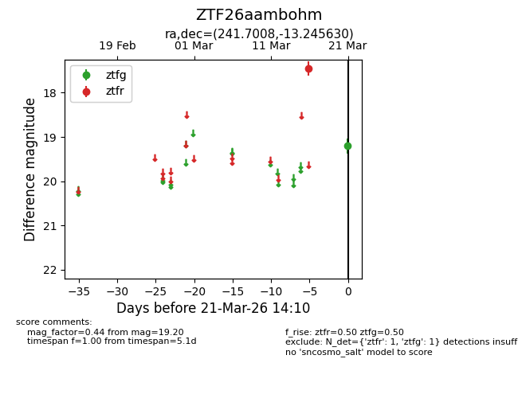
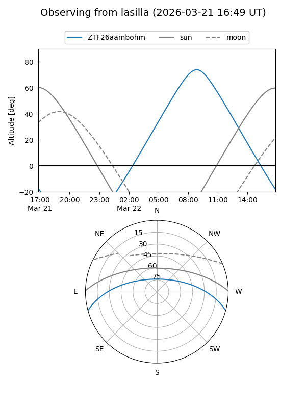
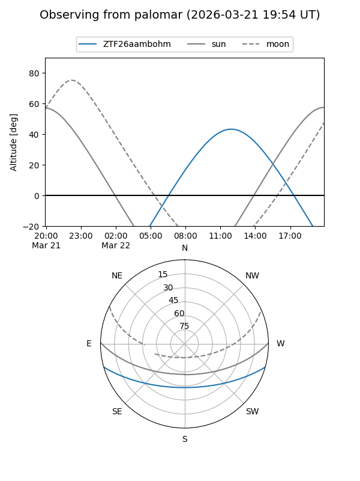

ZTF26aambohm
Target ZTF26aambohm at 2026-03-21 14:12
Aliases and brokers:
FINK: link
Lasair: link
ALeRCE: link
alt names
ZTF26aambohm (ztf,fink_ztf)
Coordinates:
equatorial (ra, dec) = 241.7008,-13.24563
equatorial (HMS+DMS) = 16:06:48.20,-13:14:44.27
galactic (l, b) = (358.8397,+27.75435)
Flags:
Photometry:
last ztfg=19.20, ztfr=17.45
1 ztfg, 1 ztfr detections
Lightcurve

Visibility


Additional plots